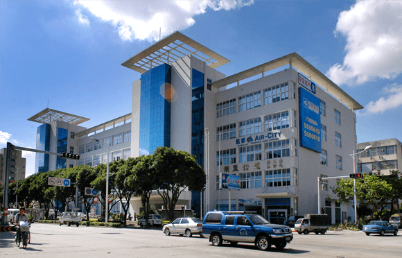
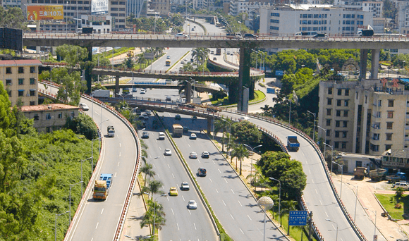
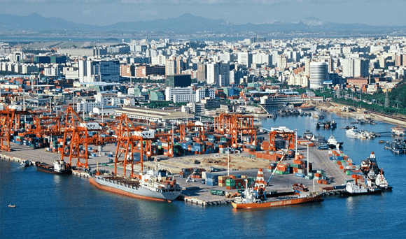

湖里街道简介
2014-12-12
12324

湖里街道位于厦门本岛西北部，地处厦门经济特区发祥地，与特区相伴而生。辖区面积12平方公里，现有18个社区，辖区人口20.1万（其中户籍人口9万,外来人口11.1万）。
（一） 改革开放最早。1980年10月，国务院批准在湖里2.5平方公里范围设立厦门经济特区。1981年9月，街道成立，成为厦门经济特区的发祥地。1984年2月，邓小平同志视察厦门经济特区，在湖里亲笔写下“把经济特区办得更快些更好些”的题词。经过改革开放35年的发展，成为湖里区经济社会发展水平较高的街道。

（二） 区位优势明显。地理位置特殊，海、陆、空交通便捷，辖区路网完善，“四横六纵”通达岛内外，距高崎国际机场仅4公里。区内有湖里老工业区、东渡和国际邮轮母港、象屿保税区、厦门自贸试验区两岸贸易核心区等，区位优势明显。
（三） 产业转型加快升级。近年来，街道坚持工业优化提升，时尚服饰、电子信息、智能制造等一批先进制造业基础支撑作用明显；物流产业集聚，成为全省较大的物流发展平台；大力调整产业结构，实施“腾巢换凤、优二强三”的产业发展战略。加快推进“三旧改造”，现有近30万平方米的旧厂房完成改造；总部经济集中，2015年全区54家总部企业有21家落户湖里街道，占全区的五分之二；文创产业快速发展，初步形成以华美空间、海峡两岸建筑设计文创园等为代表的文创产业集聚区；电子商

（四） 社会事业创新发展。围绕“美丽厦门·创新湖里”，加快创新发展。创建立体治安防控体系，建立立体化治安防控平台，在城中村等治安重点区域和节点建立即时可视报警平台和语音系统，首创“树霞个人调解工作室”、“两所一社区”等综治创新品牌，在2015年全市平安创建测评中，街道辖区居民安全感在全市38个镇街中排名第一。创新为民服务内容，落实政府购买服务项目建设，开办社区广场文化节，深入开展“幸福湖里·百姓乐”活动，连续举办七届仙岳山歌会。率先在436路车上建设开通全市首条免费无线网络社区公交，在仙岳山上建设无线网络平台。结合“一带一路”的时代主题，创建湖里街道青少年科学工作室---海丝东渡社区古船模科技文化交流中心。加快推进“美丽厦门·共同缔造”，完善“一核多元、共治共享”治理体系，打造出康乐、海天、兴华、金鼎、和通、东荣、怡景、东渡、新港、康泰、濠头等典范社区。
街道先后荣获第四届全国文明单位、全国法治社区建设示范街道、全国十佳魅力街道、全省社区建设示范街道，省先进基层党组织、连续四届省级文明单位，厦门市先进基层党组织、厦门市首批平安先进镇（街）、厦门市政风行风建设先进单位、连续三届厦门市创建全国文明城市突出贡献单位等国家、省、市级荣誉100多项。
© 湖里街道微官网